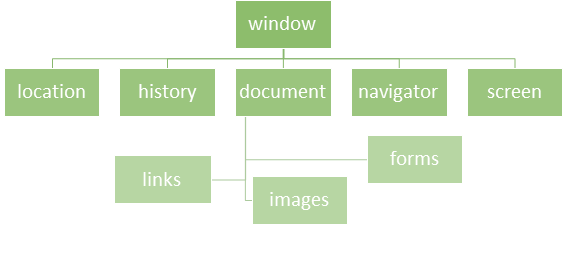
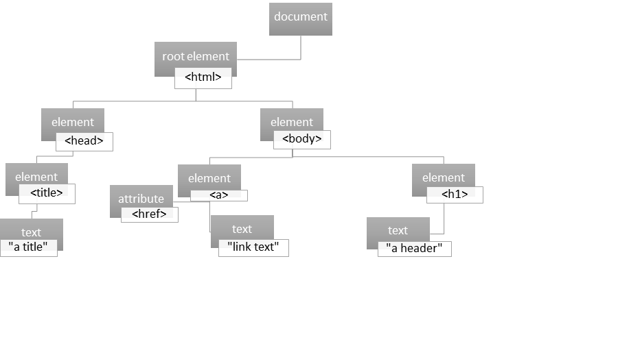

Part 1. JavaScript Language Fundamentals
Variables
Variables are used to name data, so we can store data in that name. Then we can access that data in scripts.
To create a variable, you use the var keyword and then give the variable a name. A variable name must begin with a letter, a $ sign, or the _ underscore, and it cannot contain spaces. Also, variable names are case-sensitive. A variable example is: myVariable.
Syntax:
var variablename;
For example:
var myVariable1;
This is called declaring a variable. After a variable is declared, you can assign a value to it.
Syntax:
Variablename = somedata;
For example:
myVariable1 = 1+2;
myVariable2 = “Some text”;
It is possible to declare a variable and assign it some value in one line:
var myVariable2 = “Some text”;
It is also possible to declare and assign value to numerous variables in the same line:
var myVariable2 = “Some text”, myVairable3 = 3*5, myVariable4 = true;
Variable in JavaScript come in two main data types: Simple and Complex. Simple data types are: undefined, null, Boolean, number, and string. The complex data type is object.
It is possible to convert non-numeric values into numbers. There are three ways to do this:
- Number() function
- parseInt() function
- parseFloat() function
Number() function converts a Boolean variable to a number: true becomes 1 and false becomes 0.
parseInt() function converts a String variable to a number. Whatever number is in quotes becomes an actual number. “400” becomes 400.
parseFloat() function is like parseInt(), but the number is converted into a float-point number.
Complex Data Types: The Object Data Type
Two types of objects are possible:
- built-in objects
- custom objects
Custom objects are defined by the programmer while built in objects are pre-defined, sort of like they are part of a JavaScript dictionary that a programmer can borrow from. Custom objects are like the other data types except that they can include many values. For example, a variable skirt can be given properties (size, colour, style, etc) and then values can be given for each property (large, red, a-line, etc.).
var skirt = {style:"pencil", size:"M", color:"tan"};
Code Example - Variables1.2 Operators
Operators are used to manipulate data values. JavaScript has different types of operators:
- Assignment operators
- Comparison operators
- Arithmetic operators
- Logical operators
- Conditional operators
Assignment operators
= is used to assign a value to a variable, array element, or object property.
var a = b;
There are other assignment operators:
- a += b (means a = a + b )
- a += b (means a = a + b )
- a -= b (means a = a – b)
- a *= b (means a = a x b)
- a /= b (means a = a ÷ b)
- a %= b (means a = a % b)
Comparison operators
- == (is equal to)
- === (both value and type are equal)
- != (is not equal)
- !== (both value and type are not equal)
- > (greater than)
- >= (greater than or equal to)
- < (less than)
- <= (less than or equal to)
Logical operators
- && (and)
- || (or)
- ! (not)
Arithmetic Operators
- + (addition)
- - (subtraction)
- + (concantination - for strings)
- * (multiplication)
- / (division)
- % (modulus - division remainder)
Unary Arithmetic Operators
- ++ (increment)
- -- (decrement)
Conditional operators
Conditional operators are used so we can apply logic to our applications so that certain code will execute only under certain conditions.
- :? (tertiary operator)
Syntax:
variablename = (condition) ? value1:value2
Code - Conditional operators1.3 Conditional Statements
Conditional statements can be used when we want certain code to execute only after certain decisions are made.
The conditional statements are: if, else, else if, and switch.
If statement
We use this when we want a certain code to be executed only if a certain condition is true.
Syntax
if (condition) { block of code to be executed if the condition is true }
If we wanted a message to pop up when the temperature a user enters is lower than 0 degrees Celsius, “That's below the freezing point of water”, we could use an if statement: if (degCent < 0)
if (degCent < 0) {
document.write("That's below the freezing point of water");
}
Else Statement
We can add an else statement after an if statement. We use this when we want a certain code to be executed only if the condition if false.
Syntax
if (condition) {
block of code to be executed if the condition is true
} else {
block of code to be executed if the condition is false
}
Else If Statement
We can use the else if statement when we want certain code to be executed if the first condition is false.
Syntax
if (condition1) {
block of code to be executed if condition1 is true
} else if (condition2) {
block of code to be executed if the condition1 is false and condition2 is true
} else {
block of code to be executed if the condition1 is false and condition2 is false
}
Switch
We use the switch statement to perform different actions based on different conditions. It is similar to the if statement.
Syntax
switch (expression) {
case value1:
//Statements executed when the
//result of expression matches value1
[break;]
case value2:
//Statements executed when the
//result of expression matches value2
[break;]
[default:
//Statements executed when none of
//the values match the value of the expression
[break;]]
}
The switch expression is evaluated just once. The expression’s value is compared with the values of each case. When a match occurs, the code that follows executes. Then the break keyword is met, JavaScript leaves the switch code block (so no unnecessary values are compared). Default is used to execute some code when none of the preceding cases were met.
Code - Switch1.4 Loops
Loops are useful because they can execute a block of code many times, over and over. There are a number of different loops in JavaScript. I will introduce two: for and while loops.
For loops
With for loops, you can control how many times a loop loops.
Syntax
for (counter-variable; condition-statement; increment-section) { code block to be executed }
The counter variable is used in the for loops to count how many times the loop has looped. It has no use except for this. The conditional statement checks whether the loop should execute. The increment section tells the loop to increment the counter variable either up (++) or down, decrement (--).
(Nested for loops are also possible. This means a for loop is written inside another for loop: an outer loop and an inner loop).
While loop
While loop is very common, just like for loop. The while loop loops through a block of code as long as a specified condition is true, rather than us choosing how many times the loop loops like in a for loop.
Syntax
While (expression)
statement
For example, this while loop prints the number from 0 to 15:
var counter = 0;
while ( counter < 16) {
document.write(counter);
counter++
}
1.5 Functions
A function is a block of code that is defined just once, but can be executed many times. Functions are objects, so they can be manipulated by programs because we can give them properties and methods. They are useful for repetitive tasks. Functions begin with the function keyword.
Syntax
function functionName (arg0, arg1, … argX) {
code to be executed
}
The section between the curly brackets is called the body of the function.
A function can be executed by an event or a call to the function:
Syntax- call
functionName(argumentValues);
Syntax- event
eventName=functionName(argumentValues)
For example, the event could be onclick:
<button onclick=“functionName(“pink”, “green”, “orange”)">Click me</button>
Code - Functions
1.6 Objects – General Overview
JavaScript is an object-based programming language. Objects in JavaScript are a collection of properties and methods (like how objects in the real world are too) and of constructors, as well. As I explained in the variables section, there are two general object categories: built-in objects and custom objects. Built in objects have pre-defined methods and properties but those of custom objects must be defined by the developer.
W3School gives this information on objects:
"In JavaScript, almost "everything" is an object.
- Booleans can be objects (if defined with the new keyword)
- Numbers can be objects (if defined with the new keyword)
- Strings can be objects (if defined with the new keyword)
- Dates are always objects
- Maths are always objects
- Regular expressions are always objects
- Arrays are always objects
- Functions are always objects
- Objects are always objects
All JavaScript values, except primitives, are objects."
Reference: https://www.w3schools.com/js/js_object_definition.asp
Properties contain the values for the object, and are name:value pairs. For example:
var coat = {type:"rain", fabric:"gortex", colour:”red”, size:"medium"};
Methods are actions that can be performed on an object. They are stored in properties as function definitions. Constructors are used when creating an object.
You use a new operator to create many types of objects in JavaScript:
Syntax
var myVariable = new myObject();
For example:
var book1 = new Book( );
The new operator on the right side tells JavaScript that you want to make a new object. Then comes Book( ), a constructor of the Book object.
How to access the values held in an object’s properties:
Write the variable name (that contains the object name), a dot, and then the object’s property name.
Syntax
objectName.propertyName = value;
For example:
book1.title = "The Portrait of a Lady";
How to call an object’s methods:
How to call an object’s methods: There are many, many different types of built in methods in JavaScript, for example, Date Object Methods. They share this syntax:
Syntax
objectName.methodName;
For example:
myDate.getDate();
Code - Objects (General)1.7. JS Built-in Objects
There is a vast number of built in objects in JavaScript. Here are just a few.
The Date object
The Date object is used to work with dates and times. Date objects are created like this:
new Date()
The Date object can be used for a variety of different date or time information (for example, day of the week, time in minutes, year, and so on). The Date object has two properties, constructor and prototype. The Date object has over forty built-in methods. Here are just a few:
getDate()
-returns the day of the month (in a number, from 1-31).
getFullYear()
-returns the year in four digits
getTimezoneOffset()
-returns the time difference between UTC time and local time (in minutes).
Math Object
We use Math object to perform mathematical tasks. Properties and methods of Math don’t need to be created, but can be called using Math as an object.
Syntax
var myVar = Math.PI; (returns 3.14159 approx)
var myVar2 = Math.sqrt(20); (returns the square root of the number in brackets)
Math.PI is a property, while Math.sqrt is a method. There are many math methods, including:
Max(x,y,z,… n)
-returns the number with the highest value.
Random()
-returns a random number between 0 and 1.
1.8. Array Object
An array is a build-in JavaScript object defined as a collection of data values (elements) organized under a single name. Each element of the array is identified by an index. Indexes in arrays always begin at 0. The data type in the value can be any kind. In my example for pies that follows, string data type is used.
Syntax
arrayName[indexNumber] = “value”
For Example:
| Element | [index] | Value |
|---|---|---|
| aPie | [0] | blueberry |
| aPie | [1] | lemon merengue |
| aPie | [2] | pecan |
| aPie | [3] | tourtiere |
aPie[0] = “blueberry”
An easy way to create an arrays is using an array literal:
Syntax
var array_name = [item1, item2, ...];
var Pies = ["Blueberry", "Lemon Meringue", "Pecan", “Tourtiere”];
Using the keyword new is also possible:
var Pies = new Array("Blueberry", "Lemon Meringue", "Pecan " “Tourtiere”);
You can access the elements of an array by referring to the index number. For example, if I want to access “Pecan”:
var name = Pies[2];
In JavaScript there are built-in array properties and methods. The following are a few.
The Length Property returns the number of array elements.:arrayName.length
For example: Pies.length;
which returns 4.
The constructor property returns the constructor function for an object: Pies.constructor; which returns function Array() { [native code] }
Methods
Conversion Methods: conversion of an array object to a string.
toString()
Converts the content of array to a string with all the array values listed and separated by commas. valueOf() can be used to do the same thing.
Stack Methods allow an array to behave in a way so the most recent added element is the first one to be removed
push(values)
Adds new items to the end of an array, and returns the new length.
pop()
Returns the last element. Pies.pop() will return the value “Tourtiere” in my pie array example.
Queue Methods are used to add element to the end of the array and retrieve the first item.
shift()
Removes the first element in the array and returns the length of the array minus that element.
unshift(values)
Does the opposite of shift(), adding elements to the beginning and then returning the array’s new length.
Reordering Methods
reverse()
Reverses the order of the array elements.
sort()
Puts the elements in ascending order.
Manipulation Methods
concat(array1, array2 …)
Concatenates two or more arrays into one single array.
slice(start, stop)
Extract the array items starting with start index up to the stop index. Then returns a new subarray
Arrays can also be multidimensional. Multidimensional are arrays of arrays. The following code example is of a multidimensional array:
Code - Arrays1.9. String Object
String Objects are created like this: var txt = new String(“string”);
or
var txt = “string”;
The String Object has a vast number of methods and properties. Here are just some:
Properties
constructor stringName.constructor
returns the function that created the String objects prototype:
function String() { [native code] }
length stringName.length returns the string’s length.
prototype stringName.prototype is used to add properties and methods to an object.
Methods
charAt()returns the character at the index specified.
charCodeAt()
returns the Unicode (uppercase, lowercase, number, or not a character or a number) at specified indexes.
concat() joins together strings and returns them as one joined string.
Code - concat()slice()
extracts a part of a string and returns the extracted part in a new string:
var desert = "Pie, Cake, Pastry";
var res = desert.slice(5, 9);
-returns Cake.
replace()
replaces a specified value with another value in a string:
desert.replace("Cake","Fruit");
Cake is replaced with Fruit.
toUpperCase()
converts a string to uppercase letters.
toLowerCase()
converts a string to lowercase letters.
search()
searches a string for a specified value and returns the position of the match:
var weather = "The weather is so foggy today I can’t see the mountain.";
weather.search("foggy");
-returns 18.
2.1. Browser Objects
Numerous objects are made available by the browser in JavaScript. This collection of objects is called the Browser Object Model or BOM. The BOM is a hierarchy:
Window Object
Methods
alert()
prompt()
focus()
Sets focus to the current window
setTimeout()
Calls a function or evaluates an expression after a specified number of milliseconds
confirm()
Displays a dialog box with a message and an OK and a Cancel button
Properties
There are many properties. Here are four common ones:
status
Sets or returns the text in the status bar of a window
innerHeight
Returns the inner height of a window's content area
parent
Returns the parent window of the current window
closed
Returns a Boolean value indicating whether a window has been closed or not
Navigator Object
The navigator object contains information about the browser.
Methods
javaEnabled()
Specifies whether or not the browser has Java enabled
taintEnabled()
Removed in JavaScript version 1.2. Specifies whether the browser has data tainting enabled
PROPERTIES
Properties include:
language
Returns the language of the browser
geolocation
Returns a Geolocation object that can be used to locate the user's position
appCodeName
Returns the code name of the browser
userAgent
Returns the user-agent header sent by the browser to the server
Screen Object
The screen object contains information about the visitor's screen. This is useful for making dynamic web pages, among other uses.
Properties
availHeight
Returns the height of the screen (excluding the Windows Taskbar)
availWidth
Returns the width of the screen (excluding the Windows Taskbar)
colorDepth
Returns the bit depth of the color palette for displaying images
height
Returns the total height of the screen
pixelDepth
Returns the color resolution (in bits per pixel) of the screen
width
Returns the total width of the screen
Location Object
You can create a location object by assigning a URL to the location property of an object. For example: window.location = “C:\Users\janet\Documents\ch16_example1.html”
Methods
met assign()
Loads a new document
reload()
Reloads the current document
replace()
Replaces the current document with a new one
Properties
Properties include:
search
Sets or returns the querystring part of a URL
pathname
Sets or returns the path name of a URL
host
Sets or returns the hostname and port number of a URL
History Object
The history object contains the URLs the user has visited. The history object is accessed through the window.history property
Methods
back()
Loads the previous URL in the history list
forward()
Loads the next URL in the history list
go()
Loads a specific URL from the history list
Properties
length
Returns the number of URLs in the history list
2.2. HTML Objects
Document Object Model (DOM): HTML objects
When we open a web, the browser creates a Document Object Model of the page (DOM). It is a tree of objects:
HTML DOM properties are values of HTML Elements. You can set or change them. You can use methods to perform actions on the HTML Elements.
A common method is getElementById. It is used to access an HTML element using its id.document.getElementById(id)
HTML elements can be changed, including these ways:
element.style.property = new style
-changes the style of an HTML element
element.attribute = new value
-changes the attribute value of an HTML element
Adding or Deleting elements is possible, including these ways:
document.write()
-writes text into the HTML output stream
document.removeChild(element)
-removes an HTML element
Finding HTML Objects is also possible.
Properties used with forms include:
formObject.autocomplete = on| off formObject.method = get|post formObject.noValidate = true|false
Methods used with forms are:
reset()
Resets a form
submit()
Submits a form
2.3. Events
An event is an action performed on a Web Page. For example by clicking a button, moving a mouse pointed over an element, and so on. They are used to make web pages dynamic and increase user interaction with the page.
Events can be generated by the user (onclick, etc) or automatically (onload, etc).
Event handlers are functions that are called in response to an event. There are different ways to register event handlers to an HTML element. Ones that are most useful to know are traditional and W3C model.
Traditional syntax:
Add event listener: element.event = myFunction;
remove event listener: element.event = null;
W3C model Syntax:
Add event listener: element.addEventListener(‘click’, myFunction, false)
Remove event listener: element.removeEventListener(‘click’, myFunction, false)
Event handlers
There are many event handlers. This is just a partial list.
Window and document event handlers
onload - the browser has completed loading the document
onscroll – the user has moved the scrollbar
onerror – an erros has occurred in the JavaScript program
Syntax: <element onload="script">
Form event handlers
onfocus – The user has entered an input field
onblur – The user has exited an input field
onselect – The user has selected text within an input or textarea field
Syntax
in html: <element onblur="myScript">
in JavaScript:object.onblur = function(){myScript};
In JavaScript, using the addEventListener() method:object.addEventListener("blur", myScript);
Mouse and Keyboard event handlers
onclick – The user clicks the mouse button
onkeydown - The user has pressed a key
onmouseout – The user has moved the mouse pointed off of an element
Syntax
in html: <element onmouseout="myScript">
in JavaScript: object.onmouseout = function(){myScript};
In JavaScript, using the addEventListener() method:object.addEventListener("mouseout", myScript);